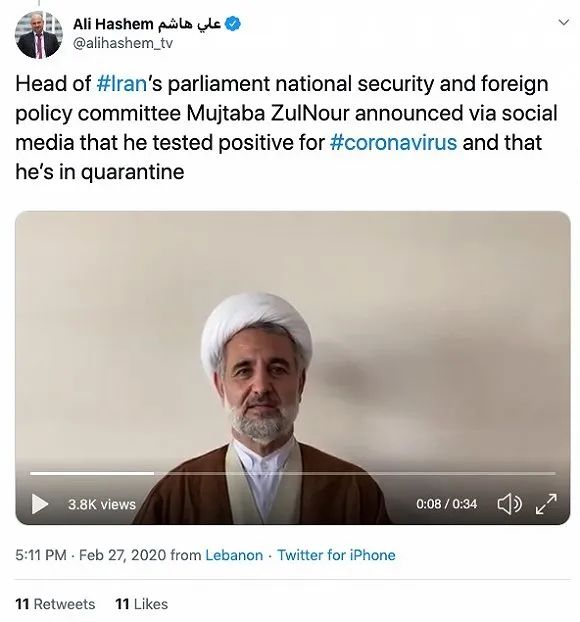

确诊28例、死亡6例！伊朗大学停课、赛事取消…WHO总干事：疫情可能朝任何方向发展
原文链接 备份链接 据路透社报道，2月22日，伊朗卫生部发言人贾汉普尔表示，伊朗新检测出10例新冠肺炎病例，其中1例已经死亡，伊朗确诊病例总数达到28例。 “伊朗所有城市可能都出现冠状病毒” 贾汉普尔表示，新增的10个被确诊病例中，8个 …

图片来源：阿纳多卢通讯社
“
鲁哈尼强调，国家对疫情高度警惕，但不会封闭任何地区或城市，只会根据情况采取限制性措施。
”
随着伊朗国内新冠肺炎确诊人数持续上升，该国政坛高层也受到病毒“入侵”。
2月27日，伊朗伊斯兰共和国通讯社(IRNA)报道称，负责妇女和家庭事务的副总统埃卜特卡尔(Masoumeh Ebtekar)的新型冠状病毒检测呈阳性；当天早些时候，伊斯兰议会国家安全与外交政策委员会主席祖努尔（Mojtaba Zonnour）发布视频称，他的新冠病毒检测结果呈阳性，正在隔离治疗中。祖努尔还在视频中呼吁伊朗民众保持冷静，疫情一定会被击败。祖努尔也是代表库姆市的议员，这座什叶派圣城恰好是伊朗疫情的中心。

在他之前，伊朗卫生部副部长哈利其（Iraj Harirchi）以及代表德黑兰大区的国会议员萨德奇（Mahmoud Sadeqi）均已确诊感染新冠病毒。首都德黑兰第13区区长也被确诊，状况好转后已经出院。
截至目前，伊朗累计确诊245例新冠肺炎病例，其中26人死亡，覆盖全国20个省份，大部分在库姆。伊朗确诊患者的死亡率也依然是全球最高，约为10.6%。
但据伊朗卫生部长贾汉普尔（Kianoush Jahanpour）通报，当日新增的106例确诊病例中，有38例来自德黑兰，超过有七例新增病例的库姆。
据英国广播公司（BBC）报道，尽管伊朗当局要求民众暂时不要前往库姆，但库姆的宗教神殿依然开放，其中著名的法蒂玛圣陵每年都会吸引来自世界各地上百万朝圣者。
伊朗最高领袖哈梅内伊27日对卫生部长纳马基（Saeed Namaki）及全体医务人员表示赞扬和感谢，称他们为国家做出的努力是“无价的”，必将受真主保佑。
伊朗领导人多次将疫情视作做敌对势力打击伊朗政权的阴谋。总统鲁哈尼26日再次表示，外国宣传机构利用伊方取消公共活动等防疫措施，试图通过操纵舆论引起恐慌，建议民众不要理会谣言。鲁哈尼还把矛头指向美国，称其多次试图阻碍伊朗国内的生产和经济活动，以伤害伊朗百姓。此前哈梅内伊也曾将议会选举低投票归咎于敌对势力的舆论影响。
据法新社报道，伊朗警方已经以在网络上传播谣言的罪名逮捕24人，还有118人被约谈。
鲁哈尼还表示，他收到的工作报告显示，伊朗持续从世界卫生组织（WHO）进口新冠病毒测试盒，同时伊朗国内专家也已经掌握测试盒的生产技术，国产产品已经进入测试阶段，很快将大规模投产。
贾汉普尔说，该国预计新建立15所新冠病毒检测实验室，下周内实验室总数将达22所。
鲁哈尼强调，国家对疫情高度警惕，但不会封闭任何地区或城市，只会根据情况采取限制性措施。
据伊朗英语新闻电视台报道，该国国防部也加入口罩和消毒液的生产，并在下属机构建立起了生产线。国防部长哈塔米（Amir Hatami）此前下命令称，国防部每日需生产口罩20000只，消毒液20000升。
BBC报道称，因供应紧张，伊朗国内的防疫用品价格已经上涨了10倍，许多药房门口都出现了排长队购买或售罄的情况。
伊朗的疫情也辐射到多个周边国家。科威特27日激增17例确诊病例，共计43例，全部与首例曾前往伊朗的旅客有关。伊拉克、巴林、阿曼、阿富汗、黎巴嫩、阿联酋、巴基斯坦，甚至加拿大都出现了与伊朗有关的确诊病例。
WHO将于本周末派专家队伍前往伊朗，对该国疫情形势进行评估，并提供援助。

原文链接 备份链接 据路透社报道，2月22日，伊朗卫生部发言人贾汉普尔表示，伊朗新检测出10例新冠肺炎病例，其中1例已经死亡，伊朗确诊病例总数达到28例。 “伊朗所有城市可能都出现冠状病毒” 贾汉普尔表示，新增的10个被确诊病例中，8个 …
原文链接 备份链接 虽然多数民众情绪表现稳定，但药店里口罩、酒精、消毒水已经被抢购一空。长期遭受制裁的伊朗，在医疗物资、医疗条件上确实没有办法应付疫情大规模爆发而产生的医疗需求上升。 2020年2月21日，伊朗纳杰夫国际机场，工作人员为旅 …
原文链接 备份链接 目前，伊朗是中东地区确诊病例最多的国家。截至27日，伊朗共确诊245例新冠病毒感染病例，其中26例死亡，25例治愈出院。 全文3274字，阅读约需6.5分钟 截至27日，全球除南极洲外的六大洲都出现了新冠病毒感染病 …
原文链接 备份链接 “伊朗应对地震很有一套， 但是传染病防控，他们实在没经验” 视频截图：哈利其（图左）在发布会上不停擦汗。 当地时间2月25日，伊朗卫生部发言人、副部长哈利其（Iraj Harirchi）新冠病毒检测呈阳性。稍晚些时候， …
原文链接 备份链接 世界卫生组织官员对韩国和伊朗等地爆发新冠病毒疫情表示担忧，但表示情况尚未上升到大流行病的程度。在美欧金融市场，这一模式已变得清晰：新增确诊病例数=增加的市场恐慌=疲弱的资本市场。这一模式会否必然在中国出现，尚待观察 …